Js là một ngôn ngữ lập trình bậc cao, hướng đối tượng và đa mô hình
ngôn ngữ lập trình bậc cao là chúng ta không phải suy nghĩ về những vấn đề phức tạp khi chạy code
hướng đối tượng là ngôn ngữ dựa trên khái niệm của đối tượng lưu trữ các dữ liệu
đa mô hình là lập trình theo nhiều cách khác nhau như là lập trình hướng mệnh lệnh or khai báo ,....
biến là để lưu giữ các dữ liệu các biến như : var , let , const
có 2 kiểu dữ liệu trong JS : Đối tượng ( Object) và dữ liệu nguyên thủy ( Primitive)
7 kiểu dạng dữ liệu nguyên thủy :
cơ bản nhất : number , string , boolean
ít sử dụng : underfined, null , symbol , bigint
let là biến có thể thay đổi giá trị nhưng là ở trong block- scope ( mutable variable )
const là biến không thể thay đổi đc giá trị (immututable variable)
var cũng giống let nhưng là ở function-scope
chúng ta nên sử dụng const theo mặc định và chỉ dùng let khi biết chắc là biến đấy nó sẽ thay đổi trong tương lai
độ ưu tiên trong JS phép nhân (*) và phép chia (/) có độ ưu tiên cao hơn so với phép cộng(+) và phép trừ (-)
toán tử chia lấy dư (%)
toán tử mũ(**)
phép gắn =,+=,*= vd: x+=10 => x = x+10
;/p
x++ => x= x+1
câu lệnh if-else là câu lệnh ktra điều kiện ra thực hiện các hành động khác nhau dựa trên kết quả đó
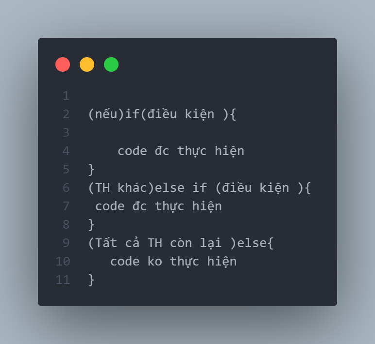switch case
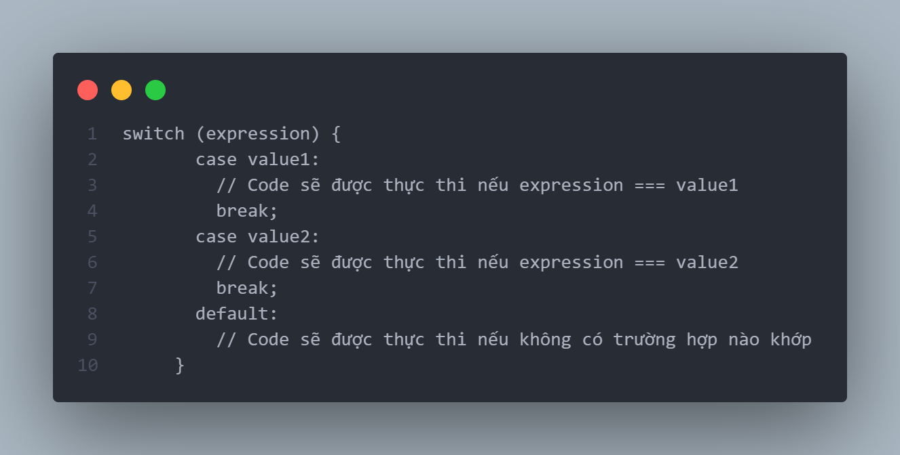Object là 1 khái niệm trừu tượng thể hiện cho 1 số đối tượng cụ thể
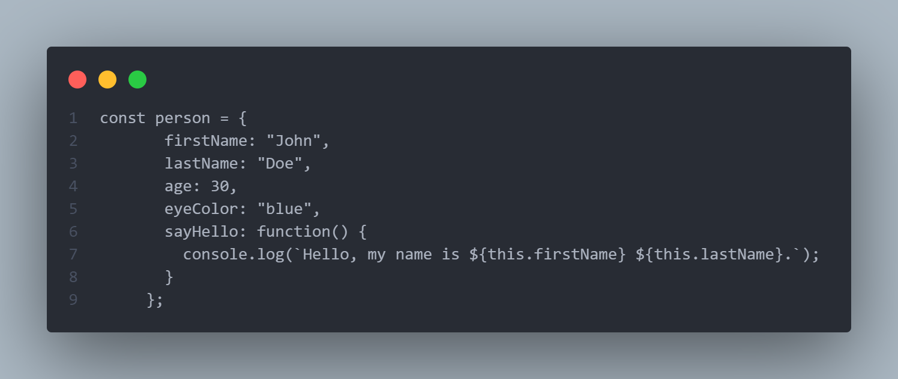vòng lặp for là 1 cấu trúc điều khiển , cho phép tự động hóa các tác vụ lặp đi lặp lại
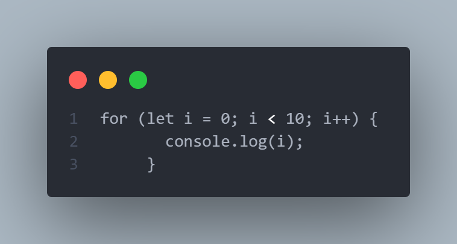là vòng lặp 1 khối mã cho đến khi điều kiện trong vòng lặp trở thành sai
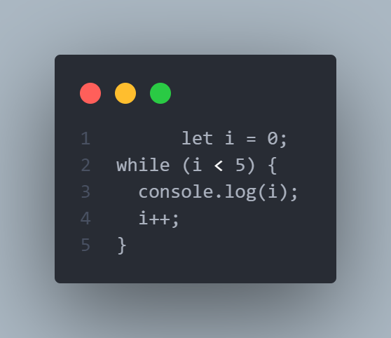được sử dụng để thoát khỏi vòng lặp ngay lập tức
được sử dụng để bỏ qua phần còn lại của vòng lặp và chuyển đến lần lặp tiếp theo.
Array là 1 cấu trúc dữ liệu quan trọng trong JS, cho phép lưu trữ các giá trị khác nhau vào trong một biến duy nhất
có 2 cách khai báo mảng
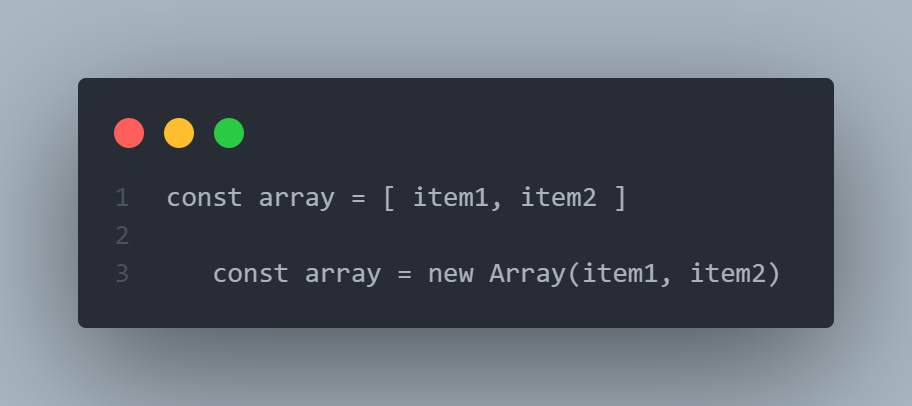push - thêm 1 phần tử vào cuối array
unshift - thêm một phần tử vào đầu array
pop – gỡ một phần tử khỏi đuôi array
indexof - chỉ ra vị trí của 1 phần tử trong array
includes – chỉ ra phần tử có xuất hiện trong array không
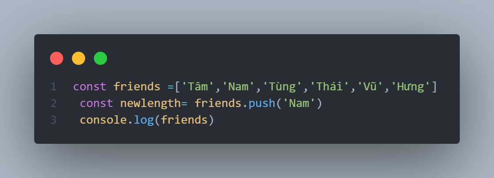DOM (Document object model) là một biểu diễn có cấu trúc của tài liệu HTML
DOM một điểm kết nối giữa tài liệu HTML và code JS
việc thay đổi nội dung và cấu trúc của tài liệu HTML và CSS thông qua việc tương tác với DOM
có các event phổ biến nhất thường dùng
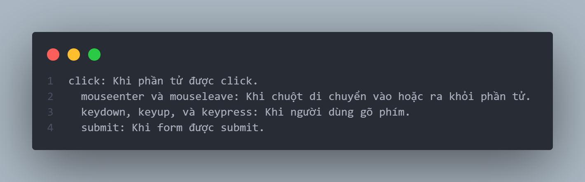Dry (don't repeat your code )
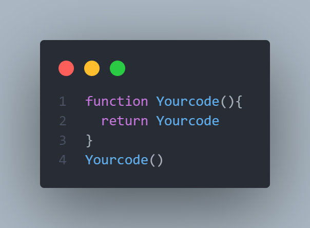Web API (Application Programming Interface) là hệ thống giao diện lâp trình dành cho máy chủ web or trình duyệt web
API là một phần của phần mềm có thể được sử dụng bởi một phần mềm khác, cho phép các ứng dụng nói chuyện với nhau và trao đổi thông tin
Callback Queue là cấu trúc dữ liệu có chứa tất cả các hàm callback sẵn sàng để thực thi.
Execution Context
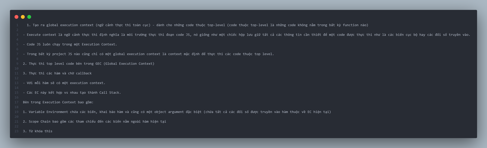Call Stack là nơi các Execution Context xếp chồng lên nhau, EC ở trên cùng của stack là thứ hiện đang chạy và khi chạy xong nó sẽ bị xóa khỏi stack.
Định nghĩa this
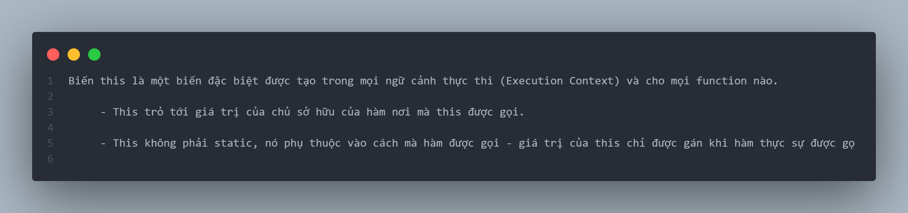Sử dụng this
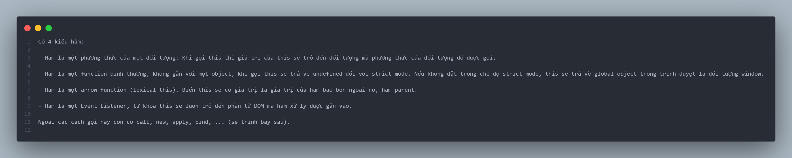